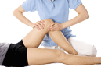
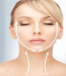
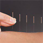

The hair and beauty clinic provides its services with world-class technologies and experienced doctors. It has a comfortable service environment.You can count on our work because our service will satisfy your satisfaction.
Beauty and rejuvenation
Over time, the skin changes with the most pronounced appearance of wrinkles in the skin. To overcome these complications, we have used many methods in this clinic to give your skin a prettier appearance and a younger look.Skin Care
Human skin, like a living and sensitive organism, requires specialized care. Having a beautiful skin is a sign of health and vitality. Ensure that the correct care of the skin results in surprising and beautiful results in life.Hair transplantation
With the advancement of natural hair growth methods, one of the common problems, hair baldness, has now become possible to remedy this, although it is simple, out-of-the-box, but very subtle, sensitive and complex.Wound Clinic
Unfortunately, the onset of chronic or deep wounded person has problems that may even lead to amputation in some cases. Fortunately, with the scientific advances and the accumulation of these methods operationally at the center, there is a significant reduction in pain and ...
Massage therapy
One person throughout all lifetimes is the ability to enjoy the benefits of massage such as increasing the amount of consciousness and thinking, increasing self-confidence and concentration, improving blood flow and lymph, increasing the elasticity of the tissues of the body, strengthening the nervous system and immune system ...Scheduling and fitness
The health of the body and organs is one of the priorities of our life, which has become one of the dilemmas of human life, especially because of its low mobility and machine life. Sure, having proportional organs in addition to being physically healthy ...Removing excess hair
Excessive hair removal is now possible using modern techniques such as laser or light radiation. At our center, after consultation with doctors, your skin and hair are appropriate for this treatment.
Skin Lifting
So far, there are many ways to rejuvenate, but the latest method that reverses the aging process is the lifting of the face without surgery and with yarn. This technique is based on the insertion of slowly absorbing yarns in the substrate.